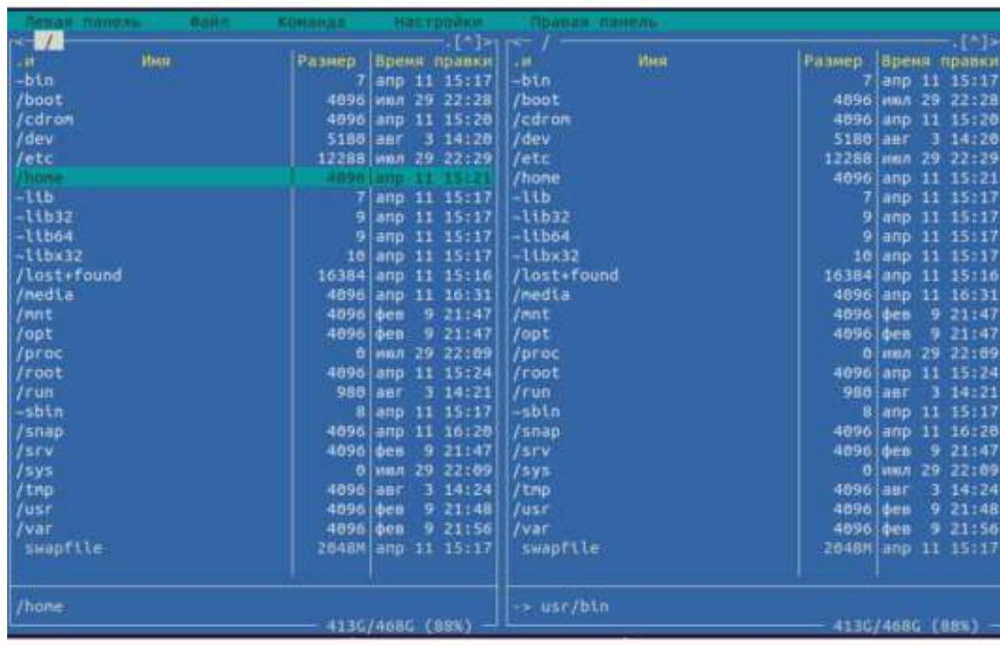
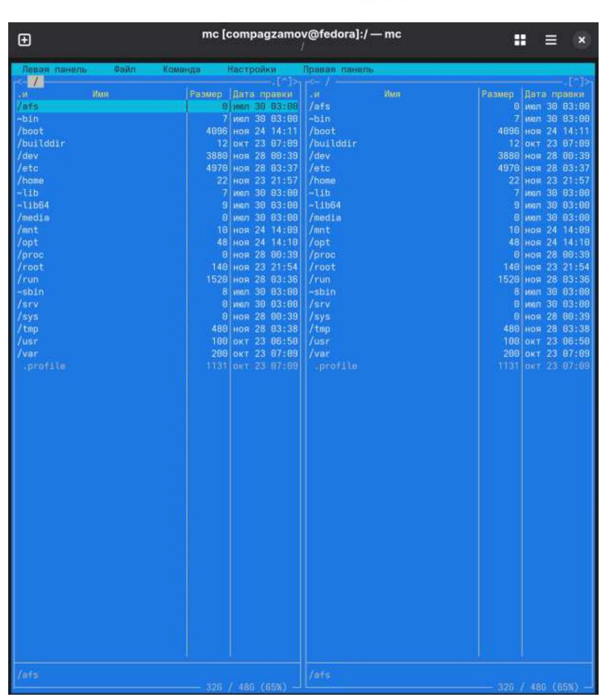
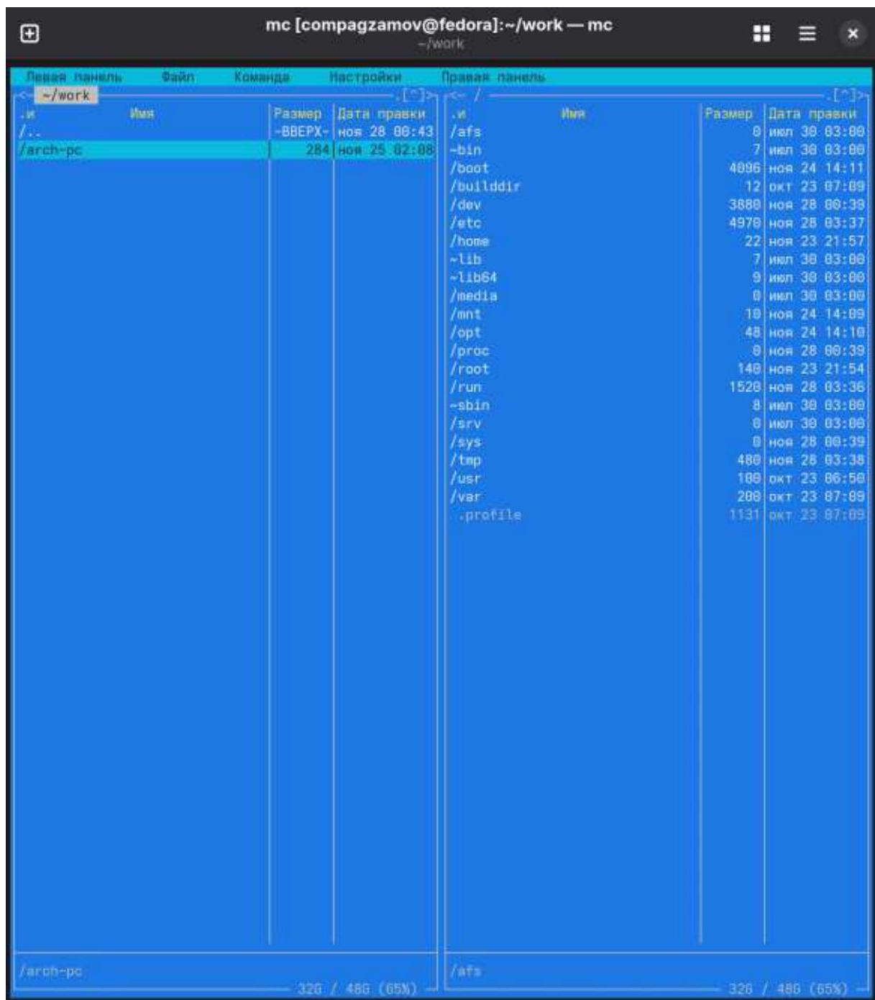
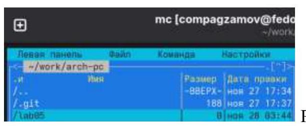
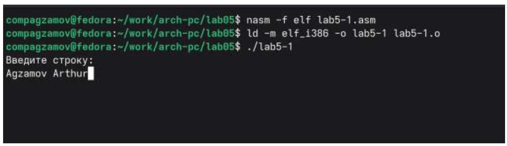
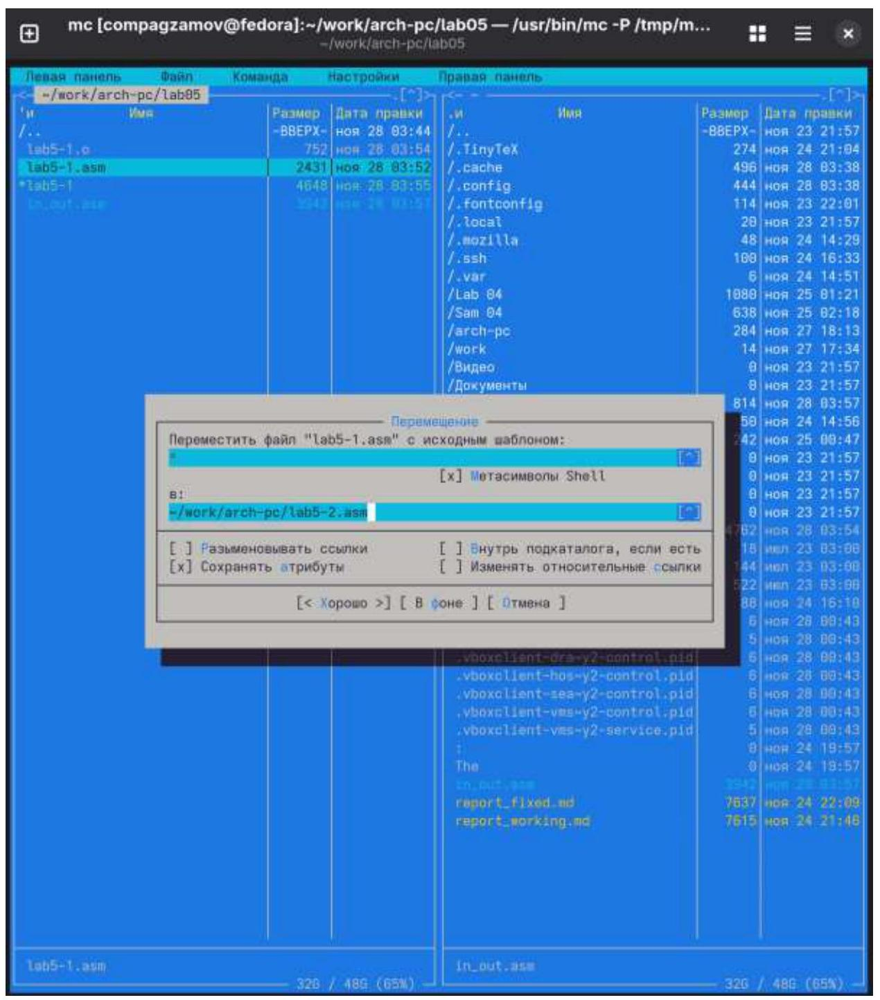
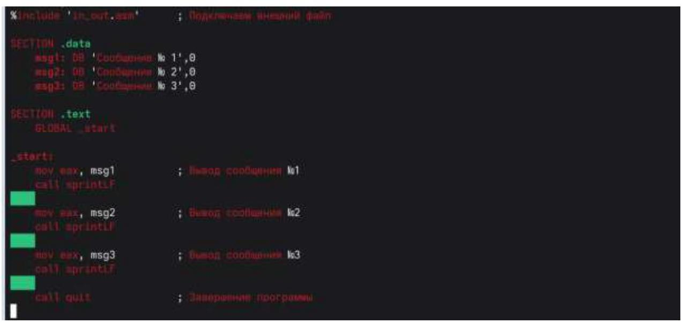
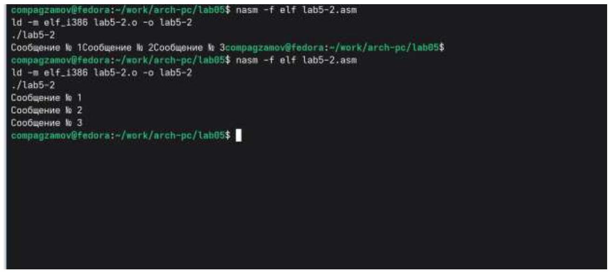
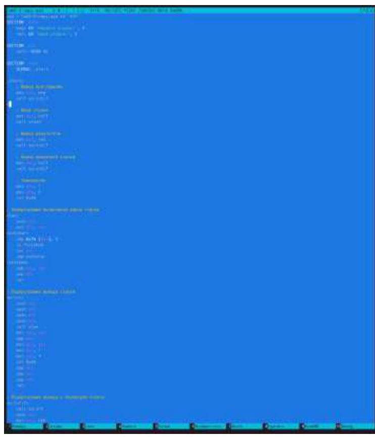

РОССИЙСКИЙ УНИВЕРСИТЕТ ДРУЖБЫ НАРОДОВ
Факультет физико-математических и естественных наук Кафедра прикладной информатики и теории вероятностей
Отчет по лабораторной работе №5
дисциплина: Архитектура ЭВМ
Студент: Агзамов Артур Дамирович(1032253528) Группа: НКАбд-01-25
Содержание
- Цель работы стр. 4
- Теоретическое введение стр. 5
- Выполнение лабораторной работы стр. 12
- Выполнение самостоятельной работы стр. 19
- Выводы стр. 22
Список иллюстраций
- Puc. 5.1. Oкuo Midnight Commander cmp. 7
- Puc. 5.2.lab01 cmp. 12
- Puc. 5.3.lab02 cmp. 12
- Puc. 5.4.lab03 cmp. 13
- Puc. 5.5.lab04 cmp. 13
- Puc. 5.6.lab05 cmp. 14
- Puc. 5.7.lab06 cmp. 14
- Puc. 5.8 .lab07 cmp. 15
- Puc. 5.9 .lab08 cmp. 17
- Puc. 5.10 .lab09 cmp. 18
- Puc. 5.11 .lab10 cmp. 18
- Puc. 5.12 .sam01 cmp. 19
- Puc. 5.13 .sam02 cmp. 20
- Puc. 5.14 .sam03 cmp. 21
1.Цель работы
Приобретение практических навыков работы в Midnight Commander. Освоение инструкций языка ассемблера mov и int.
2. Теоретическое введение
2.1. Основы работы с Midnight Commander
Midnight Commander (или просто mc ) — это программа, которая позволяет просматривать структуру каталогов и выполнять основные операции по управлению файловой системой, т.е. mc является файловым менеджером. Midnight Commander позволяет сделать работу с файлами более удобной и наглядной. Для активации оболочки Midnight Commander достаточно ввести в командной строке mc и нажать клавишу Enter (рис. 5.1). B Midnight Commander используются функциональные клавиши F1 — F10 , к которым привязаны часто выполняемые операции (табл. 5.1).
Таблица 5.1. Функциональные клавиши Midnight Commander
| Функциональные клавиши | Выполняемое действие |
|---|---|
| F1 | вызов контекстно-зависимой подсказки |
| F2 | вызов меню, созданного пользователем |
| F3 | просмотр файла, на который указывает подсветка в активной панели вызов встроенного редактора для файла, на который указывает подсветка в активной панели |
| F4 | копирование файла или группы отмеченных файлов из каталога, отображаемого в активной панели, в каталог, отображаемый на второй панели |
| F6 | перенос файла или группы отмеченных файлов из каталога, отображаемого в активной панели, в каталог, отображаемый на второй панели |
|---|---|
| F7 | создание подкаталога в каталоге, отображаемом в активной панели |
| F8 | удаление файла (подкаталога) или группы отмеченных файлов |
| F9 | вызов основного меню программы |
| F10 | выход из программы |
Следующие комбинации клавиш облегчают работу с Midnight Commander:
- Tab используется для переключениями между панелями;
- \(\uparrow\) и \(\downarrow\) используется для навигации, Enter для входа в каталог или открытия файла (если в файле расширений mc.ext заданы правила связи определённых расширений файлов с инструментами их запуска или обработки);
- \(\mathrm{Ctrl}+\mathrm{u}\) (или через меню Команда \(>\) Переставить панели ) меняет местами содержимое
правой и левой панелей;
- Ctrl + о (или через меню Команда > Отключить панели ) скрывает или возвращает панели
Midnight Commander, за которыми доступен для работы командный интерпретатор
оболочки и выводимая туда информация. \(\cdot \mathrm{Ctrl}+\mathrm{x}+\mathrm{d}\) (или через меню Команда > Сравнить каталоги ) позволяет сравнить содержимое каталогов, отображаемых на левой и правой панелях.
Дополнительную информацию о Midnight Commander можно получить по команде man mc и на странице проекта [3].
2.3. Структура программы на языке ассемблера NASM
Программа на языке ассемблера NASM, как правило, состоит из трёх секций: секция кода программы (SECTION .text), секция инициированных (известных во время компиляции) данных (SECTION .data) и секция неинициализированных данных (тех, под которые во время компиляции только отводится память, а значение присваивается в ходе выполнения программы) (SECTION .bss). Таким образом, общая структура программы имеет следующий вид:
SECTION data : Секция содержит переменные, для
: которых задано начальное значение

Рис. 5.1. Окно Midnight Commander
SECTION .bss ; Секция содержит переменные, для … ; которых не задано начальное значение SECTION .text ; Секция содержит код программы GLOBAL _start _start: ; Точка входа в программу … ; Текст программы mov eax. 1 ; Системный вызов для выхода (sys_exit) mov ebx,0 ; Выход с кодом возврата 0 (без ошибок) int 80h ; Вызов ядра
Для объявления инициированных данных в секции .data используются директивы DB, DW, DD, DQ и DT, которые резервируют память и указывают, какие значения должны храниться в этой памяти: • DB (define byte) — определяет переменную размером в 1 байт; • DW (define word) — определяет переменную размеров в 2 байта (слово); • DD (define double word) — определяет переменную размером в 4 байта (двойное слово); • DQ (define quad word)— определяет переменную размером в 8 байт (учетверённое слово); • DT (define ten bytes) — определяет переменную размером в 10 байт.
Директивы используются для объявления простых переменных и для объявления массивов. Для определения строк принято использовать директиву DB в связи с особенностями хранения данных в оперативной памяти. Синтаксис директив определения данных следующий: DB [, ] [, ]
Пример a db 10011001b
b db ‘!’
c db “Hello” d dd -345d
h dd 0f1ah
Пояснение определяем переменную а размером 1 байт с начальным значением, заданным в двоичной системе счисления (на двоичную систему счисления указывает также буква b (binary) в конце числа)
определяем переменную b в 1 байт, инициализируемую символом !
определяем строку из 5 байт
определяем переменную d размером 4 байта с начальным значением, заданным в десятичной системе счисления (на десятичную систему указывает буква d (decimal) в конце числа)
определяем переменную h размером 4 байта с начальным значением, заданным в шестнадцатеричной системе счисления (h — hexadecimal)
Для объявления неинициированных данных в секции .bss используются директивы resb, resw, resd и другие, которые сообщают ассемблеру, что необходимо зарезервировать заданное количество ячеек памяти. Примеры их использования приведены в табл. 5.3.
Таблица 5.3. Директивы для объявления неинициированных данных
| Директива | Назначение директивы |
Аргумент | Назначение аргумента |
|---|---|---|---|
| resb | Резервирование заданного числа однобайтовых ячеек |
string resb 20 | По адресу с меткой string будет расположен массив из 20 однобайтовых ячеек (хранение строки символов) |
| resw | Резервирование заданного числа двухбайтовых ячеек (слов) |
count resw 256 | По адресу с меткой count будет расположен массив из 256 двухбайтовых слов |
| resd | Резервирование заданного числа четырёхбайтовых ячеек (двойных слов) |
x resd 1 | По адресу с меткой х будет расположено одно двойное слово (т.е. 4 байта для хранения большого числа) |
2.4. Элементы программирования
2.4.1. Описание инструкции mov
Инструкция языка ассемблера mov предназначена для дублирования данных источника в приёмнике. В общем виде эта инструкция записывается в виде mov dst src Здесь операнд dst — приёмник, a src — источник. В качестве операнда могут выступать регистры (register), ячейки памяти (memory) и непосредственные значения (const). В табл. 5.4 приведены варианты использования mov с разными операндами.
Таблица 5.4. Варианты использования mov с разными операндами
| Тип операндов | Пример | Пояснение |
|---|---|---|
| mov |
mov eax, ebx | пересылает значение регистра ebx в регистр eax |
| mov |
mov cx, [eax] | пересылает в регистр сх значение из памяти, указанной в eax |
| mov |
mov rez, ebx | пересылает в переменную rez значение из регистра ebx |
| mov |
mov eax, 403045h | пишет в регистр еax значение 403045h |
| mov |
mov byte[rez], 0 | записывает в переменную rez значение 0 |
ВАЖНО! Переслать значение из одной ячейки памяти в другую нельзя, для этого необходимо использовать две инструкции mov:
mov eax, x
mov y, eax
Также необходимо учитывать то, что размер операндов приемника и источника должны совпадать. Использование слудующих примеров приведет к ошибке:
- mov al, 1000 h - ошибка, попытка записать 2-байтное число в 1-байтный регистр;
- mov eax,cx - ошибка, размеры операндов не совпадают.
2.4.2. Описание инструкции int
Инструкция языка ассемблера intпредназначена для вызова прерывания с указанным номером. В общем виде она записывается в виде
Здесь n - номер прерывания, принадлежащий диапазону 0-255. При программировании в Linux с использованием вызовов ядра sys_calls \(\mathrm{n}=80 \mathrm{~h}\) (принято задавать в шестнадцатеричной системе счисления).
После вызова инструкции int 80 h выполняется системный вызов какой-либо функции ядра Linux. При этом происходит передача управления ядру операционной системы. Чтобы узнать, какую именно системную функцию нужно выполнить, ядро извлекает номер системного вызова из регистра еax. Поэтому перед вызовом прерывания необходимо поместить в этот регистр нужный номер. Кроме того, многим системным функциям требуется передавать какие-либо параметры. По принятым в ОС Linux правилам эти параметры помещаются в порядке следования в остальные регистры процессора: ebx, ecx, edx. Если системная функция должна вернуть значение, то она помещает его в регистр еax.
2.4.3. Системные вызовы для обеспечения диалога с пользователем
Простейший диалог с пользователем требует наличия двух функций — вывода текста на экран и ввода текста с клавиатуры. Простейший способ вывести строку на экран — использовать системный вызов write. Этот системный вызов имеет номер 4 , поэтому перед вызовом инструкции int необходимо поместить значение 4 в регистр еax. Первым аргументом write, помещаемым в регистр ebx, задаётся дескриптор файла. Для вывода на экран в качестве дескриптора файла нужно указать 1 (это означает «стандартный вывод», т. е. вывод на экран). Вторым аргументом задаётся адрес выводимой строки (помещаем его в регистр есx, например, инструкцией mov ecx, msg). Строка может иметь любую длину. Последним аргументом (т.е. в регистре edx) должна задаваться максимальная длина выводимой строки. Для ввода строки с клавиатуры можно использовать аналогичный системный вызов read. Его аргументы -такие же, как у вызова write,только для «чтения» с клавиатуры используется файловый дескриптор 0 (стандартный ввод). Системный вызов exit является обязательным в конце любой программы на языке ассемблер. Для обозначения конца программы перед вызовом инструкции int 80 h необходимо поместить в регистр еax значение 1 , а в регистр ebx код завершения 0 .
3.Выполнение лабораторной работы
Открыли Midnight Commander. 
Рис.5.3.lab02
Перешли в каталог /work/arch-pc. 
Рис.5.4.lab03 С помощью F7 создали папку lab05 и перешли в созданный каталог. 
Рис.5.5.lab04
С помощью команды touch создали файл lab5-1.asm.
compagzamov@fedora: / / / / / / / / / / / / / / / / / / / / / / / / / / / / / / / / / / / / / / / / / / / / / / / / / / / / / / / / / / / / / / / / / / / / / / / / / / / / / / / / / / / / / / / / / / / / / / / / / / / / / / / / / / / / / / / / / / / / / / / / / / / / / / / / / / / / / / / / / / / / / / / / / / / / / / / / / / / / / / / / / / / / / / / / / / / / / / / / / / / / / / / / / / / / / / / / / / / / / / / / /
С помощью F3 открыли файл lab5-1.asm для просмотра и убедились, что файл содержит текст программы.
Оттранслировали файл в объектный, выполнили компоновку и запустили его. Программа вывела ‘Введите строку:’ и ожидала ввода. На запрос я ввел свою ФИО. 
Рис.5.8.lab07
5.3.1. Подключение внешнего файла in_out.asm
Для упрощения написания программ часто встречающиеся одинаковые участки кода (такие как, например, вывод строки на экран или выход их программы) можно оформить в виде подпрограмм и сохранить в отдельные файлы, а во всех нужных местах поставить вызов нужной подпрограммы. Это позволяет сделать основную программу более удобной для написания и чтения. NASM позволяет подключать внешние файлы с помощью директивы %include, которая предписывает ассемблеру заменить эту директиву содержимым файла. Подключаемые файлы также написаны на языке ассемблера. Важно отметить, что директива %include в тексте программы должна стоять раньше, чем встречаются вызовы подпрограмм из подключаемого файла. Для вызова подпрограммы из внешнего файла используется инструкция call, которая имеет следующий вид call \(<\) function \(>\)
где function имя подпрограммы. Для выполнения лабораторных работ используется файл in_out.asm1 , который содержит
следующие подпрограммы [4]:
- slen - вычисление длины строки (используется в подпрограммах печати сообщения
для определения количества выводимых байтов);
- sprint - вывод сообщения на экран, перед вызовом sprint в регистр еax необходимо записать выводимое сообщение (mov eax,
); - sprintLF - работает аналогично sprint, но при выводе на экран добавляет к сообщению символ перевода строки;
- sread - ввод сообщения с клавиатуры, перед вызовом sread в регистр еax необходимо записать адрес переменной в которую введенное сообщение буд записано (mov eax, \(<\) buffer \(>\) ), в регистр еbx - длину вводимой строки (mov ebx, \(<\mathrm{N}>\) );
- iprint - вывод на экран чисел в формате ASCII, перед вызовом iprint в регистр еax необходимо записать выводимое число (mov eax, \(<\) int \(>\) );
- iprintLF - работает аналогично iprint, но при выводе на экран после числа добавляет
к символ перевода строки;
- atoi - функция преобразует ascii-код символа в целое число и записыает результат в регистр еax, перед вызовом atoi в регистр еax необходимо записать число (mov eax, \(<\) int \(>\) );
- quit - завершение программы.
Скачали файл in_out.asm со страницы курса в ТУИС. Поместили в каталог lab05. В одной из панелей mc открыли каталог с файлом lab5-1.asm. В другой панели каталог со скаченным файлом in_out.asm (для перемещения между панелями используйте Tab ). Скопировали файл in_out.asm в каталог с файлом lab5-1.asm с
помощью функциональной клавиши F5. С помощью функциональной клавиши F6 создали копию файла lab5-1.asm с именем lab5-2.asm. Выделили файл lab5-1.asm, нажали клавишу F6 , ввели имя файла lab5-2.asm и нажали клавишу Enter. 
Рис.5.9.lab08 Исправили текст программы в файле lab5-2.asm с использование подпрограмм из внешнего файла in_out.asm (используйте подпрограммы sprintLF, sread и quit) в соответствии с листингом 5.2. Создали исполняемый файл и проверили его работу.

Рис.5.10.lab09
В файле lab5-2.asm замените подпрограмму sprintLF на sprint. Создайте исполняемый файл и проверьте его работу. 
Рис.5.11.lab10
И выяснили, что: sprint - создает вывод строки БЕЗ перевода строки sprintLF - создает вывод строки С переводом строки
5.4. Выполнение самостоятельной работы
Создали копию файла lab5-1.asm. Внесли изменения в программу (без использования внешнего файла in_out.asm), так чтобы она работала по следующему алгоритму:
- вывести приглашение типа “Введите строку:”;
- ввести строку с клавиатуры;
- вывести введённую строку на экран.
compagzamov@fedora: //eork/arch-pc/1ab05$ cat > lab5-1.asm << 'EOF'
SECTION .data
msg: DB 'Введите строку:', 0
res: DB 'Ваша строка:', 0
SECTION .bss
buf1: RESB 80
SECTION .text
GLOBAL _start
start:
mov eax, msg
call sprint
mov eax, buf1
call sread
mov eax, res
call sprint
mov eax, buf1
call sprint
mov eax, 1
mov ebx, 0
int 0x80
clen:
push ebx
mov ebx, eax
nextchar:
cmp byte [eax], 0
jz finished
inc eax
jmp nextchar
finished:
sub eax, ebx
pop ebx
retРис.5.12.sam01
Получили исполняемый файл и проверили его работу. На приглашение ввели свою фамилию.
compagzamov@fedora:~/work/arch-pc/lab05$ # Трансляция в объектный файл
basm -f elf lab5-1.asm
# Компоновка
ld -m elf_1386 lab5-1.o -o lab5-1
# Запуск программы
f/lab5-1
Введите строку:Agzamov
Наша строка:Agzamovcompagzamov@fedora:~/work/arch-pc/lab05$Рис.5.13.sam02 Создали копию файла lab5-2.asm. Исправили текст программы с использование подпрограмм из внешнего файла in_out.asm, так чтобы она работала по следующему алгоритму:
- вывести приглашение типа “Введите строку:”;
- ввести строку с клавиатуры;
- вывести введённую строку на экран. 
Рис.5.14.sam03
СУИС-2-2009
Введите строку: Проверка успешно пройдена! Пиши строка! Проверка успешно пройдена!
Рис.5.15.sam04
5.Выводы
В ходе работы были приобретены навыки работы с файловым менеджером Midnight Commander (mc) и выполнения базовых операций с файлами через командную строку Bash и интерфейс mc. Изучена структура программы на ассемблере NASM, включая назначение секций .data и .bss для хранения данных, а также директив db, dw, dd, dq и dt для определения данных разного размера. Освоено назначение основных инструкций ассемблера, таких как mov для перемещения данных и int 80 h для выполнения системных вызовов в Linux.